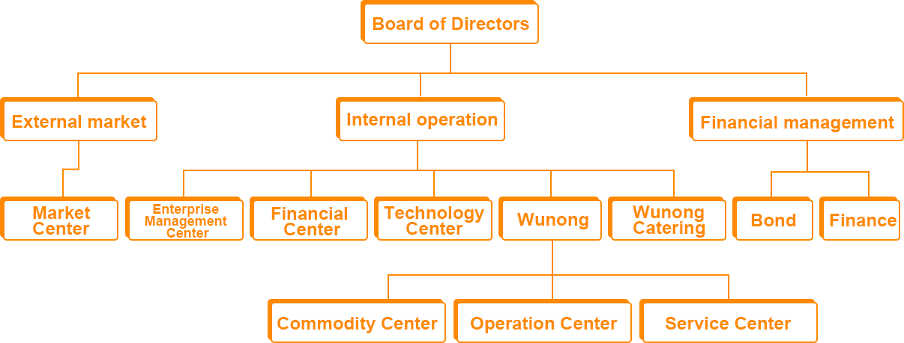
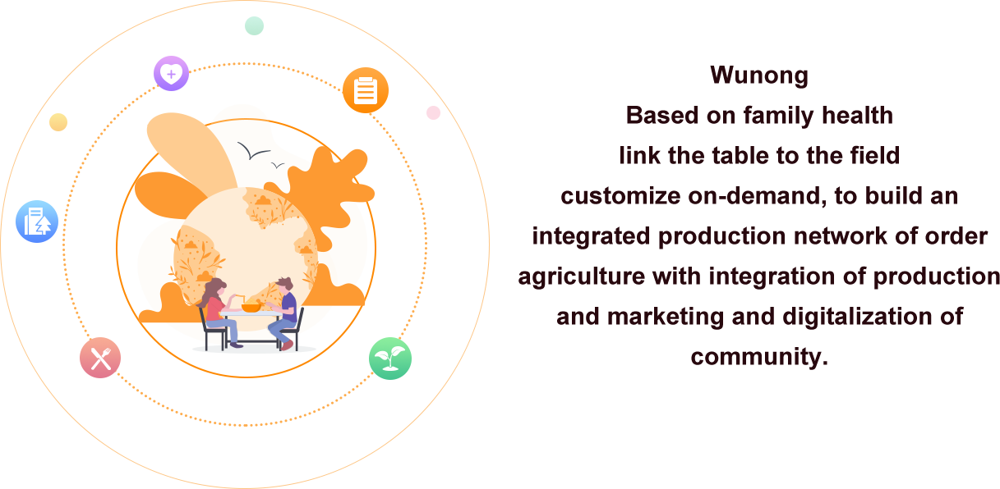
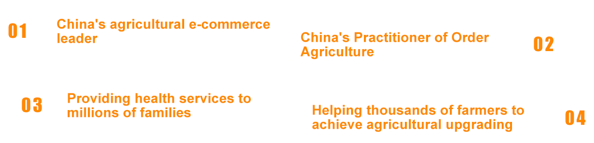
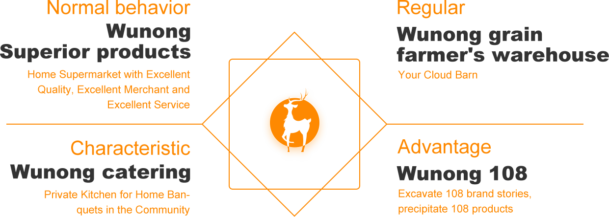
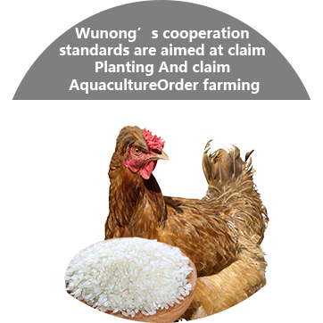
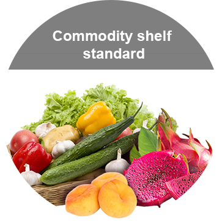
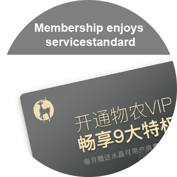
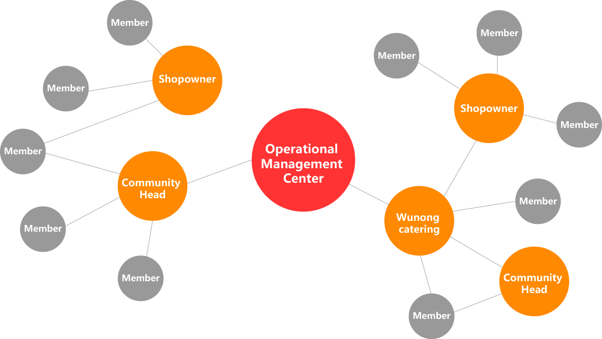

Peter Chen /President
- ●Senior Finance Officer and China General Management Competence Trainer
- ●Famous Cultural Broker
- ●Founder of Harbin International Beer Festival and Marketing Planner of Crazy English
- ●Microsoft Windows 2000 Office 2000 China Market Planner
- ●Current Chairman of Shenzhen Science and Technology Co, Ltd
Eric Huang
CEO/Operation/Business/Planning- ●Precision Intelligent Marketing
- ●Subject Report of the Traceability System Conference of the Ministry of Industry and Information Technology of China
- ●Designer of Shaanxi Pilot Project of Liquor Distribution Traceability of the State Ministry of Commerce
- ●Theme Speech of the Second Food and Beverage Summit
- ●Interview with "Two-dimensional Code Marketing Expert" of Guangdong Satellite TV of Phoenix Satellite TV
- ●Special Report of Bao'an Daily in Shenzhen Special Economic Zone
- ●Planning and Operation of Dongpeng Beverage Marketing Platform
- ●Top Ten Entrepreneurs in Baoan District, Shenzhen,2017-2018
Changbin Xia
President of Finance- ●Veteran
- ●General Manager of Xi'an Renzhi Material
- ●Trading Company from 2000 to 2011General Manager of Nanning Zhuhu Real Estate Company from 2013 to2016
- ●2017 - Up to now, Initiate in wunong Financial President
Hanwu Yang
CMO- ●Graduatedfrom Chinese Department of Shaanxi Normal University
- ●Former Classical Chinese Department of University
- ●15 years of experience in marketing, team building and education and training
- ●In 2017, he Initiate in wunong and became president of the market
Alec Qin
COO/Product President/
Agricultural Products Technical Expert
- ●Over 20 years experience in agriculture and food industry
- ●Worked in Coca-cola, HK SimsTrading, HK Lamsoon, and took charge of sales and marketing
- ●Good at products sourcing, upgrading and trade marketing
- ●Have successful cases both in brand building and new products development
Jiake Chen
CTO/ Technical President/
Big Data Specialist
- ●Former Senior Technical Manager of China Mobile
- ●Alibaba "System Architect" P8 Level
- ●Huawei Grade 18 "Chief Engineer"
- ●Focus on SAAS and AI
Helin
CFO/Chief Financial Adviser- ●Graduated from Hunan Business College, majoring inFinanceStarting in
- ●He is now the financial director of Shenzhen LixinChuangyuan Technology Co, Ltd






